금속재료산업기사 (2012-05-20 기출문제)
1과목: 금속재료
1. 합금원소의 역할을 설명한 것 중 틀린 것은?
- Ni : 내식성 및 내산화성을 증가시킨다.
- Mn : 함유량이 많아지면 내마멸성을 크게 감소시키고 상온취성 및 청열취성을 방지한다.
- Mo : 담금질 깊이를 깊게 하고, 크리프 저항과 내식성을 증가시킨다.
- Co : Cr과 함께 사용되어 고온 강도와 고온 경도를 크게 증가시킨다.
(정답률: 70%)

2. 구리가 다른 금속재료에 비하여 우수한 점이 아닌 것은?
- 경금속이며, 열에 잘 견딘다.
- 전연성이 좋아 가공이 용이하다.
- 전기 및 열의 전도성이 우수하다.
- 아름다운 광택과 귀금속적 성질이 우수하다.
(정답률: 80%)
3. 7:3 황동에 1%의 주석(Sn)이 첨가될 때 겉보기 아연(Zn)함유량은 몇 %인가? (단, Sn의 Zn 당량은 2이다.)
- 29.09%
- 31.37%
- 44.44%
- 76.19%
(정답률: 77%)
4. 주철 중의 Fe3C를 분해하여 흑연화하는 원소로서, 이 성분이 높은 주철은 급냉하지 않는 한 공정 흑연을 정출한다. 또한 4% 이상 첨가하면 안정한 산화막을 만들어 내산화성이 우수해지는 이 원소는?
- Cr
- Ni
- Si
- Al
(정답률: 54%)
5. 금속의 결정입자 크기가 작아짐에 따른 현상으로 옳은 것은?
- 인성이 증가한다.
- 강도가 감소한다.
- 연성이 감소한다.
- 결정립계면이 감소한다.
(정답률: 62%)
6. 가공성과 동시에 강인성을 요구하는 경우 적당한 탄소량의 구간으로 옳은 것은?
- 0.⑤~0.3%
- 0.3~0.45%
- 0.45~0.65%
- 0.65~1.2%
(정답률: 61%)
7. Fe-C 평형상태도에서 냉각 중 공석반응으로 생성되는 조직으로 옳은 것은?
- 펄라이트(pearlite)
- 마텐자이트(matensite)
- 오스테나이트(austenite)
- 레데뷰라이트(ledeburite)
(정답률: 52%)
8. 기체, 액체 급랭 방법으로 제작되며, 결정 금속 특유의 결정입계, 전위, 편석 등의 결함이 존재하지 않고 자기적인 특성이 우수한 합금은?
- 초합금
- 비정질합금
- 초탄성합금
- 형상기억합금
(정답률: 75%)
9. 전자강판(규소강판)에 요구되는 특성으로 틀린 것은?
- 투자율 및 포화자속밀도가 낮을 것
- 용접성 등의 가공성이 좋을 것
- 자화에 의한 치수변화가 적을 것
- 사용 중 자기적 성질의 변화가 적을 것
(정답률: 85%)
10. 철광석과 그에 따른 화학식이 올바르게 연결된 것은?
- 자철광 : Fe3O4
- 능철광 : Fe2O3
- 갈철광 : FeCO3
- 적철광) : 2Fe2O3ㆍ3H2O
(정답률: 83%)
11. 18-8스테인리스강의 조직으로 옳은 것은?
- 페라이트(ferrite)
- 펄라이트(pearlite)
- 시멘타이트(cementite)
- 오스테나이트(austenite)
(정답률: 85%)
12. 다음 중 소결초경질 공구강의 금속 탄화물이 아닌 것은?
- WC
- GC
- TiC
- TaC
(정답률: 81%)
13. 신금속을 군(群)으로 분류할 때 원자로용 1차 금속군에 해당되는 것은?
- U, Th
- W. Re
- Ge, Si
- Na, Cs
(정답률: 71%)
14. 주철의 파면 광택에 따라 분류할 때 이에 해당되지 않는 것은?
- 회주철
- 백주철
- 반주철
- 구상흑연주철
(정답률: 60%)
15. 금속분말과 세라믹(ceramic)이 복합된 내열성 분말소결합금은?
- 서멧(cermet)
- 초경합금(WC-Co)
- 소결자석(sintered magmet)
- SAP(sintered Aluminium powder)
(정답률: 78%)
16. 금속변태 중 동소변태에 대한 설명으로 틀린 것은?
- 자성변화가 생긴다.
- 격자배열의 변화가 생긴다.
- A3, A4 변태를 동소변태라 한다.
- 일정온도에서 불연속적인 성질변화를 일으킨다.
(정답률: 74%)
17. 냉간가공시 재료에 발생하는 현상에 대한 설명으로 옳은 것은?
- 연성이 증가한다.
- 밀도가 증가한다.
- 전기저항이 증가한다.
- 경도가 감소한다.
(정답률: 60%)
18. Cu, Sn, 흑연분말을 적정 혼합하여 소결에 의해 제조한 분말야금용 합금으로 급유가 곤란한 부분의 베어링으로 사용되는 재료는?
- 켈밋(Kelmet)
- 자마크(Zamak)
- 오일라이트(Oillite)
- 베비트 메탈(Babbit metal)
(정답률: 79%)
19. 탄소강에서 가장 취약해지는 청열취성이 나타나는 온도구간으로 옳은 것은?
- 50~100℃
- 200~300℃
- 300~400℃
- 500~600℃
(정답률: 77%)
20. Ni-Cr 합금으로 내열성과 내식성이 함께 요구되는 석유화학장치, 약품 및 식품공업에 사용되는 재료는?
- 인바
- 인코넬
- 퍼멀로이
- 플래티나이트
(정답률: 69%)
2과목: 금속조직
21. 상온에서의 순철에 대한 설명으로 옳은 것은?
- 비자성체이다.
- 배위수는 12개이다.
- 귀속 원자수가 4개이다.
- 원자 충전율은 약 68%이다.
(정답률: 70%)
22. 주조시 일어나는 금속의 수축 3단계 과정으로 옳은 것은?
- 액체의 수축→고상액상 공존구간의 수축→고체의 수축
- 액체의 수축→고체의 수축→고상액상 공존구간의 수축
- 고체의 수축→고상액상 공존구간의 수축→액체의 수축
- →고상액상 공존구간의 수축→액체의 수축→고체의 수축
(정답률: 79%)
23. 스테인리스강에서 자주 나타나는 입계부식을 방지하기 위한 가장 효과적인 첨가 원소는?
- Al
- Ti
- Cu
- Mg
(정답률: 49%)
24. 금속의 응고과정에서 고상의 자유에너지 변화에 대한 설명으로 틀린 것은? (단, ro는 임계핵의 반지름, r은 고상의 반지름, Ev은 체적 자유에너지, Es는 계면 자유에너지이다.)
- r＜ro인 경우에는 반지름이 증가함에 따라 자유에너지는 감소한다.
- 고상의 전체 자유에너지의 변화는 E=Es-Ev로 표시된다.
- ro이상 크기의 고상을 결정의 핵(nucleus)이라 한다.
- ro이하 크기의 고상입자를 엠브리오(embryo)라 한다.
(정답률: 64%)
25. 시효경화를 위한 조건을 설명한 것 중 틀린 것은?
- 기지상은 연성을 가져야 한다.
- 석출물이 기지조직과 정합 상태이어야 한다.
- 고용체의 용해한도가 온도감소에 따라 급감해야 한다.
- 급냉에 의해 제2상의 석출이 잘 이루어져야 한다.
(정답률: 41%)
26. 적층결함은 다음 중 어느 결함에 속하는가?
- 선결함
- 점결함
- 면결함
- 체적결함
(정답률: 57%)
27. 전위의 증식과 가장 관계 깊은 것은?
- 전위의 집적(Pile Up)
- 코트렐 효과(Cottrel Effect)
- 프랭크 리드 원(Frank-Read Source)
- 전위의 상승(Dislocation Climbing)
(정답률: 64%)
28. 재료의 기계적 성질 및 가공과 재결정과의 관계를 설명한 것 중 옳은 것은?
- 재결정은 전위에 영향을 미치지 않는다.
- 가공도가 클수록 축적된 변형에너지는 작아진다.
- 가공도가 클수록 재결정은 저온에서 일어난다.
- 일반적으로 재료의 강도, 내부응력 등은 재결정단계에서는 감소되지 않는다.
(정답률: 43%)
29. 그림은 공정형 상태도이며, 곡선 AE는 M의 액상선이다. M의 고상선은?(오류 신고가 접수된 문제입니다. 반드시 정답과 해설을 확인하시기 바랍니다.)
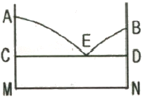
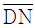
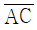
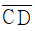
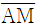
(정답률: 48%)
30. 금속에 있어서 확산을 나타내는 Fick의 제1법칙의 식으로 옳은 것은? (단, J는 농도구배, D는 확산계수, c는 농도, x는 위치(거리)이고, 농도의 시간적 변화는 고려하지 않는다.)
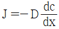
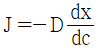
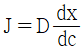
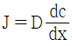
(정답률: 72%)
31. 확산의 속도가 빠른 순서로 나열된 것은?
- 표면확산＞입계확산＞격자확산
- 표면확산＞격자확산＞입계확산
- 격자확산＞표면확산＞입계확산
- 입계확산＞격자확산＞표면확산
(정답률: 85%)
32. 면심입방격자 금속의 슬립면과 슬립방향은?
- 슬립면 : {111}, 슬립방향 : ＜110＞
- 슬립면 : {110}, 슬립방향 : ＜111＞
- 슬립면 : {0001}, 슬립방향 : ＜1111＞
- 슬립면 : {1111}, 슬립방향 : ＜0001＞
(정답률: 81%)
33. 격자상수가 a≠b≠c이고, α≠β≠γ≠90°인 것은 어떤 결정계인가?
- 입방정계
- 정방정계
- 단사정계
- 삼사정계
(정답률: 62%)
34. 마텐자이트 변태의 특징이 아닌 것은?
- 원자의 협동에 의해 일어난다.
- 확산변태로 조성이 변화한다.
- 상내에 격자결함이 존재한다.
- 변태에 수반하여 표면의 기복이 발생한다.
(정답률: 80%)
35. 최외각 전자수가 4인 원자가 공유 결합한다고 할 때 공유결합하는 전자의 수는?
- 2개
- 3개
- 4개
- 5개
(정답률: 70%)
36. Roozeboom의 3성분계농도 표시법에서 [그림]과 같은 p 조성 합금 중의 A의 조성은 어느 선분의길이로 표시되는가?
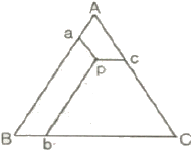
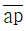
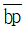
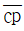
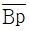
(정답률: 68%)
37. 규칙격자를 만드는 일반적인 3가지의 형태가 아닌 것은?
- AB형
- A3B형
- A3B2형
- AB3형
(정답률: 75%)
38. 냉간 가공에 의한 축적에너지의 크기에 영향을 주는 인자가 아닌 것은?
- 가공도
- 가공온도
- 자유도
- 합금원소
(정답률: 66%)
39. 금속재료에서 규칙-불규칙이 재료에 미치는 영향을 설명한 것 중 틀린 것은?
- 규칙도가 큰 합금은 비저항이 작다.
- 규칙합금은 소성가공하면 규칙도가 증가한다.
- 일반적으로 규칙화 진행과 함께 강도가 증가한다.
- Ni3Mn은 규칙상에서 강자성체이나 불규칙 상은 상자성체이다.
(정답률: 48%)
40. 다음 중 금속의 특성이 아닌 것은?
- 모든 금속은 강자성체이다.
- 금속은 소성 변형을 한다.
- 금속은 열 및 전기전도도가 크다.
- 금속은 고체상태에서 결정구조를 갖는다.
(정답률: 82%)
3과목: 금속열처리
41. S곡선에 대한 설명으로 틀린 것은?
- 응력이 존재하면 Ms선의 온도는 상승한다.
- C, Mn 등이 많을수록 S곡선은 좌측으로 이동한다.
- 응력이 존재하면 S곡선의 변태개시선이 좌측으로 이동한다.
- 가열온도가 높을수록 S곡선의 코부분이 우측으로 이동한다.
(정답률: 69%)
42. 알루미늄 및 그 합금의 질병 기호 중 용체화 처리 후 인공 시효 경화 처리한 것을 나타내는 기호는?
- T1
- T2
- T6
- T7
(정답률: 64%)
43. 다음 중 담금질성을 증가시키는 원소가 아닌 것은?
- C
- Mn
- Cr
- Co
(정답률: 54%)
44. 다음 곡선은 58℃의 정수에 있어서의 냉각곡선을 나타낸 것으로 증기막 단계에 해당되는 부분은?
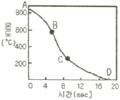
- 곡선AB
- 곡선BC
- 곡선CD
- 곡선AD
(정답률: 74%)
45. 펄라이트 가단주철의 열처리 방법이 아닌 것은?
- 가스 탈탄법
- 합금원소의 첨가에 의한 방법
- 열처리 사이클의 변화에 의한 방법
- 흑심가단 주철의 재열처리에 의한 방법
(정답률: 61%)
46. 가스 침탄법에서 침탄 시간과 확산은 7시간이고 목표표면 탄소농도는 0.65%이며, 침단시 탄소 농도가 1.⑤%일 때의 침탄 소요 시간은? (단, 소재 자체의 탄소 농도는 0.25% 이며 Harris의 방정식을 이용하시오.)
- 1.5 시간
- 1.75 시간
- 2 시간
- 2.25 시간
(정답률: 61%)
47. 열처리폼이 소정의 이동장치에 의해 연속적으로 노내에 장입되어 이송되면서 가열, 유지 및 냉각이 이루어지는 열처리 장치인 연속로의 특성이 아닌 것은?
- 다량생산에 적합하다.
- 열처리 공정의 자동화에 용이하게 적용할 수 있는 방식이다.
- 연속로에서 소형 스크류나 얇은 판재류 등을 침탄 할 경우 경화층의 깊이는 1mm~2mm 정도이다.
- 일반적으로 볼트, 너트 및 열간단조품 등을 처리하며 처리품의 품질이 대체적으로 균일하다.
(정답률: 79%)
48. 열처리 제품의 전ㆍ후 처리 방법 중 기계적 처리 방법이 아닌 것은?
- 전해 연마법
- 버프 연마법
- 배럴 연마법
- 쇼트 피닝법
(정답률: 65%)
49. 고망간강인 Hadfield(1.1%C, 13%Mn) 강을 1000℃에서 30분간 유지시킨 후 수냉을 하였을 때의 조직은?
- 페라이트(Ferrite)
- 펄라이트(Pearlite)
- 마텐자이트(Martensite)
- 오스테나이트(Austenite)
(정답률: 48%)
50. 잔류오스테나이트에 대한 설명 중 옳은 것은?
- 탄소강에서 탄소함유량과 잔류오스테나이트 함유량은 비례관계에 있다.
- 잔류오스테나이트는 근본적으로 오스테나이트와 결정 구조가 다르다.
- 퀜칭시 냉각속도를 지연시킬수록 잔류오스테나이트의 생성량은 감소한다.
- 니켈, 망간 등의 원소를 첨가하면 잔류오스테나이트의 생성량은 감소한다.
(정답률: 52%)
51. 다음 중 금속 재질에 인성을 부여할 수 있는 열처리는?
- 담금질
- 뜨임
- 어닐링
- 노멀라이징
(정답률: 79%)
52. 고주파 표면 담금질의 특징으로 틀린 것은?
- 무공해 열처리 방법이다.
- 국부적인 가열이 가능하다.
- 담금질 경화 깊이 가능하다.
- 질량효과(mass effect)를 증가시킨다.
(정답률: 66%)
53. 고속도공구강(SKH 51)의 경도를 HRc 63이상의 경도로 얻고자 할 때 담금질 및 뜨임온도로 옳은 것은?
- 담금질 : 1200~1240℃(유냉), 뜨임 : 540~570(공냉)
- 담금질 : 1⑤0~1140℃(유냉), 뜨임 : 500~540(공냉)
- 담금질 : 850~940℃(유냉), 뜨임 : 450~500(공냉)
- 담금질 : 650~740℃(유냉), 뜨임 : 400~450(공냉)
(정답률: 64%)
54. 강의 담금질성을 판단하는 방법이며, 오스테나이트로 가열된 공석강은 펄라이트를 생성되지 않게 하고 마텐자이트만 생성하는데 필요한 최소한의 냉각속도는?
- 분열 냉각 속도
- 항온 냉각 속도
- 계단 냉각 속도
- 임계 냉각 속도
(정답률: 81%)
55. 공석강의 연속냉각곡선(CCT)에서 냉각속도가 빠를 때 생성되는 조직의 순서로 옳은 것은?
- 투루스타이트→소르바이트→펄라이트→마텐자이트
- 마텐자이트→투루스타이트→소르바이트→펄라이트
- 펄라이트→소르바이트→마텐자이트→투루스타이트
- 마텐자이트→펄라이트→투루스타이트→소르바이트
(정답률: 79%)
56. 광휘 열처리의 분위기에 사용되는 가스로서 철강과 반응하지 않는 가스는?
- 산화성가스
- 환원성가스
- 불활성가스
- 침탄성가스
(정답률: 64%)
57. 탄소강이 열처리에 의해 가열되었을 때 강재에 나타나는 온도의 색깔이 가장 높은 것은?
- 암적색
- 황홍색
- 붉은색
- 밝은 백색
(정답률: 75%)
58. 담금질한 공석강의 냉각 곡선에서 시편을 100℃의 물속에 넣었을 때 ①과 같은 곡선을 나타낼 때의 조직은?
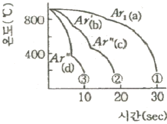
- 페라이트
- 펄라이트
- 오스테나이트
- 마텐자이트
(정답률: 57%)
59. TTT 곡선의 Nose와 Ms점의 중간 온도로 유지된 영욕 속에서 변태가 완료될 때까지 일정시간 유지한 다음, 공냉시키면 베이나이트 조직이 생기는 열처리 조작을 무엇이라 하는가?
- 마템퍼링(martempering)
- 마퀜칭(marquenching)
- 오스템퍼링(austempering)
- 타임 퀜칭(time quenching)
(정답률: 67%)
60. 냉각제의 냉각 효과를 지배하는 인자가 아닌 것은?
- 점성
- 비중
- 기화열
- 열전도도
(정답률: 67%)
4과목: 재료시험
61. 금속의 조직검사 방법 중 육안 또는 배율 10배 이하의 확대경으로 검사하는 시험법의 명칭은?
- 비금속 개재물 검사
- 응력측정 시험
- 매크로 검사법
- 비틀림 시험
(정답률: 82%)
62. 작업장에서 작업자의 복장에 대한 설명 중 틀린 것은?
- 화기 사용시에는 불연성을 사용한다.
- 기름이 묻은 작업복을 착용하지 않는다.
- 여름철에는 작업복을 착용하지 않는다.
- 작업복은 몸에 맞고 동작이 편한 복장은 착용 한다.
(정답률: 83%)
63. 다음 재료시험 중 정적시험 방법이 아닌 것은?
- 인장시험
- 압축시험
- 비틀림시험
- 충격시험
(정답률: 75%)
64. 매우 작은 금속편의 현미경 조직검사를 위한 시험절차로 적합한 것은?
- 시편채취→연마→마운팅→부식→조직 관찰
- 시편채취→연마→부식→마운팅→조직 관찰
- 시편채취→마운팅→연마→부식→조직 관찰
- 시편채취→마운팅→부식→연마→조직 관찰
(정답률: 70%)
65. 재료의 응력 측정법이 아닌 것은?
- 광탄성 방법
- X-선 방법
- 무레아 방법
- 커핑 방법
(정답률: 52%)
66. X선관에서 표적(target)이 갖추어야 할 조건이 아닌 것은?
- 원자번호가 커야 한다.
- 용융점이 높아야 한다.
- 열전도성이 높아야 한다.
- 높은 증기압을 갖는 물질이어야 한다.
(정답률: 58%)
67. 인장시험의 응력-변형율 선도를 설명한 것 중 옳은 것은?
- 탄성한계 내에서는 후크의 법칙이 성립한다.
- 항복점이후 음력을 제거하면 원상태로 되돌아간다.
- 탄소함유량이 달라도 같은 재질이면 항복강도는 같다.
- 항복점 측정이 곤란한 재질은 20%의 영구변형이 생기는 응력을 항복점으로 정한다.
(정답률: 57%)
68. 금속 재료의 파괴 형태를 설명한 것 중 다른 하나는?
- 미세한 공공 형태의 딤플 현상
- 인장시험시 컴-원뿔 형태로 파괴
- 외부 힘에 의해 갑자기 발생되는 손상 형태
- 균열의 전파 전 또는 전파 중에 상당한 소성변형 유발
(정답률: 56%)
69. 다음 중 굽힘시험에 대한 설명으로 틀린 것은?
- 굽힘균열시험으로 재료의 전성, 연성, 균열의 유무를 알 수 있다.
- 보통 굽힘시험에서 알 수 있는 비례한계는 명확하지 않다.
- 주철의 단면강도는 보통 파단계수로서 크기를 정한다.
- 굽힘파단계수는 인장강도에 비례하므로 단면형상과는 관계없다.
(정답률: 68%)
70. 철강재의 설퍼프린트 시험결과에서 황(S) 편석의 분포가 강재의 중심부로부터 표면부 쪽으로 증가하여 나타나는 편석을 무엇이라고 하는가?
- 정편석(SN)
- 역편석(SI)
- 주상편석(SCO)
- 중심부편석(SC)
(정답률: 60%)
71. 표면 코일을 사용하는 와전류 탐상 검사에서 시험코일과 시험체 표면의 상대 거리의 변화에 의해 출력지시가 변화를 나타내는 현상은?
- 모서리 효과(Edge Effect)
- 끝부분 효과(End Effect)
- 리프트-오프 효과(Lift-Off Effect)
- 충진율 효과(Fill-Factor Effect)
(정답률: 67%)
72. 철강의 미세조직을 현미경으로 검사하기 위한 부식액으로 알맞은 것은?
- 질산초산 용액
- 염화제2철 용액
- 나이탈 용액
- 수산화나트륨 용액
(정답률: 63%)
73. 쇼어 경도계의 종류가 아닌 것은?
- A형
- C형
- D형
- SS형
(정답률: 60%)
74. 강재의 압축시험에서 시험편의 크기가 직경 d=10mm, 높이 h=20mm일 때 압축하중 5500kg를 가하여 파단각 θ=59.6°를 얻었다면 이때 실제 압축강도는 약 몇 kgf/mm2인가?
- 3.5 kgf/mm2
- 28 kgf/mm2
- 70 kgf/mm2
- 87 kgf/mm2
(정답률: 56%)
75. 인장시험기에 시험편의 물림 상태가 가장 양호한 것은?
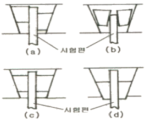
- (a)
- (b)
- (c)
- (d)
(정답률: 73%)
76. 강의 비금속 개재물 중 B형 개재물과 관련이 깊은 것은?
- 황화물
- 규산염
- 알루민산염
- 구형 산화물
(정답률: 70%)
77. 자분탐상 검사에서 탈자(demagnetization)처리가 필요없는 경우에 해당되는 것은?
- 시험체의 잔류자속이 이후 기계가공을 곤란하게 하는 경우
- 시험체가 큐리점(curie point)이상으로 열처리 되었을 경우
- 시험체의 잔류자속이 계측기의 작동이나 정밀도에 영향을 주는 경우
- 시험체가 마찰부분에 사용될 때 자분집적으로 마모에 영향을 주는 경우
(정답률: 78%)
78. 상대적으로 경한 입자나 미세돌기와의 접촉에 의해 표면으로부터 마모입자가 이탈되는 현상으로 마모 면에 긁힘 자국이나 끝이 파인 홈들이 나타나는 마모는?
- 연삭 마모
- 응착 마모
- 부식 마모
- 표면피로 마모
(정답률: 74%)
79. 로크웰경도 시험에서 2개의 이웃하는 누르개 자국의 중심간 거리는 누르개 자국 지름의 몇 배 이상이어야 하는가?
- 2.0배
- 2.5배
- 3.5배
- 4.0배
(정답률: 51%)
80. 비파괴 시험의 종류와 그에 따른 약호가 서로 틀린 것은?
- 초음파탐상시험 : UT
- 방사선투과시험 : RT
- 자분탐상시험 : MT
- 침투탐상시험 : LT
(정답률: 67%)